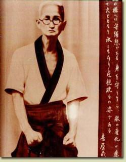

Chotoku Kyan was probably the most influential of O'Sensei's Tote instructors and Chito-ryu is abundant with Kyan influences. We can see this in numerous kata that we do, including Bassai, Chinto, Sanshiru and Kusanku. Chito-ryu also has a variation of Kyan Seisan. However, our Seisan is also very close to the common Matsumura Seisan and Kyan's influence on O'Sensei's Seisan isn't fully understood. O'Sensei also learned Ananku and Gojushiho from Kyan. Kyan spawned over half a dozen popular styles which have splintered into many more groups since his death. Because of this, Kyan is considered not only one of the main influences of Chito-ryu, but of Shorin-ryu as a whole. Like most famous masters, Kyan also attended the "Meeting of Okinawan Masters" in Oct. 25th, 1936 to discuss the re-naming of Tote-jutsu to Karate-do.
Because of his permanent squint and small spectacles, Kyan was known throughout his life as Migua Chan (small eyed Kyan - Chan is the original pronunciation, it is sometimes pronounced Kiyabu or Kiyatake in modern Japanese). Chotoku Kyan was a weak, sickly child who overcame his poor eyesight and small size to become a renowned master through constant practice. Born in December of 1870, Chotoku was the third or fourth son of Chotoku Kyan, steward to the Ryukyuyan King Shotai and 11th-generation successor of the Shosei family line. Chofu was educated in Chinese and Japanese classics and was a skilled martial artist. He was a trusted member of the Royal staff and carried out all the business of the Royal family. Around this time, events that would eventually become known as the Meiji Restoration were affecting all of Okinawa, especially the royalty and their workers. The Meiji government of Japan officially abolished all royalty and aristocracy in Okinawa in 1872.
It has been repeated that Kyan studied under Itosu, Bushi Matsumura's most famous successor; however, there are other students of Kyan (Nakazato Joen) and even the successor of Itosu Anko (Chibana Chosin) who said that Kyan never practiced under Itosu. There is no way to know for sure without someone uncovering further documentation in the future. Regardless of this, Kyan obtained an impressive Tode education under the very best Okinawan masters.
Kyan took part in some of the very first demonstrations along with other famous masters following the 1917 demonstration by Funakoshi Gichin and Matayoshi Shinko in Kyoto, Japan for the Dai Nippon Butokukai (founded 1895, The Butokukai is a governing body for Japanese martial arts). Kyan was also a member of the 1918 Ryukyu Tote Kenkyukai (Okinawan Karate research club) founded by Miyagi Choyun and run by the successors of the last generation of masters.
Known as an innovator, Kyan contributed much to the body of Tote knowledge. He was small and had to adjust his skills to his small stature. This led to innovations in taisabaki, kicking and jumping techniques. He never backed up, but preferred to move forward at a diagonal when defending. As with other youths of the time, Kyan took part in challenge matches to test his skill and according to his students, he was never defeated. As Kyan was one of the main instructors of Hisataka Kori, it is has been said, that Kyan had the most profound influence on the Karatedo of Hisataka Kori.